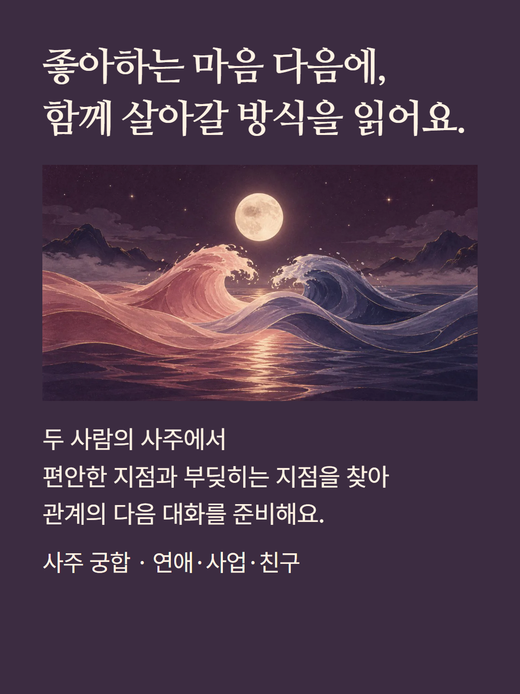
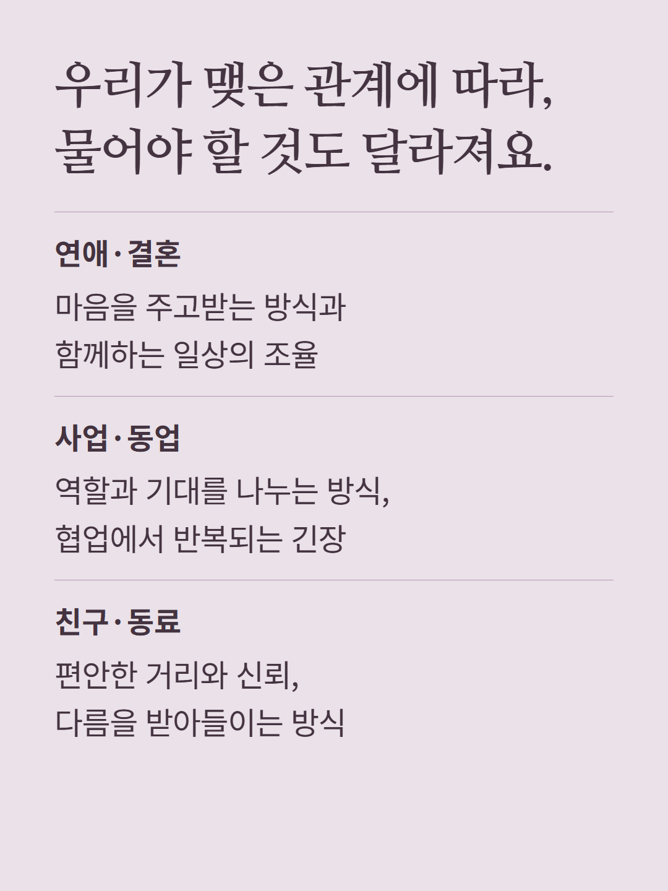
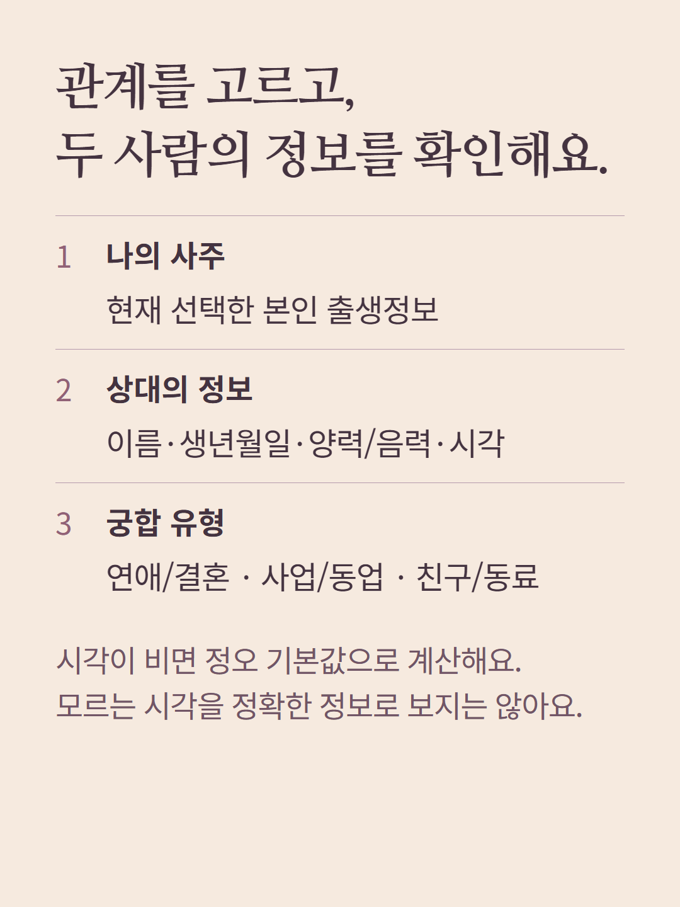
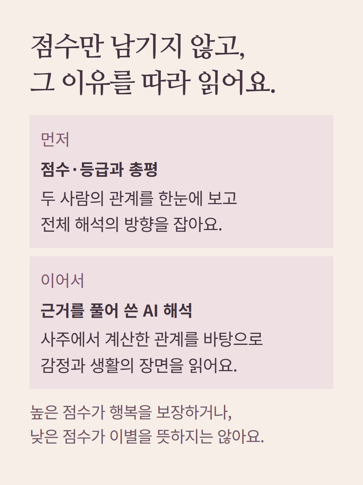
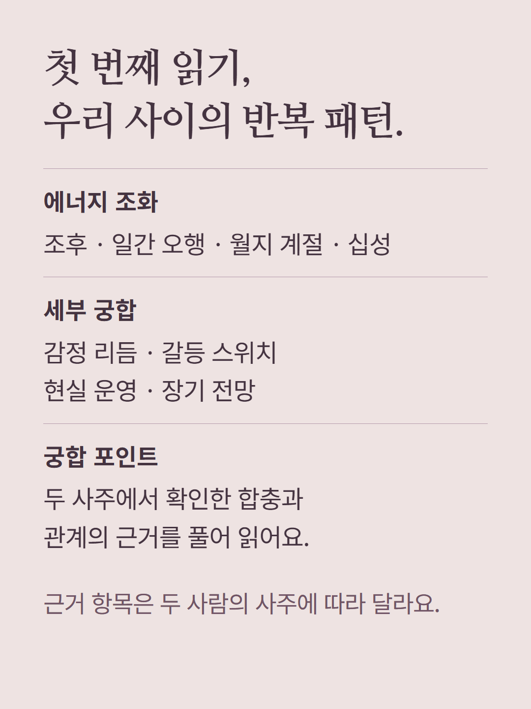
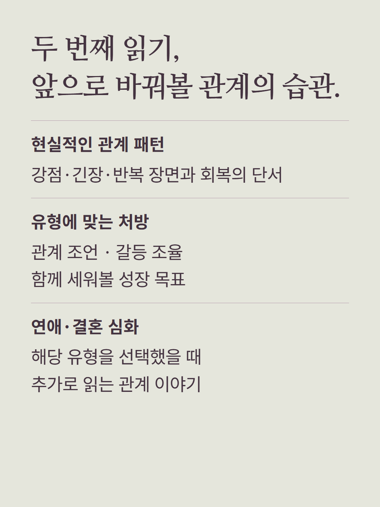
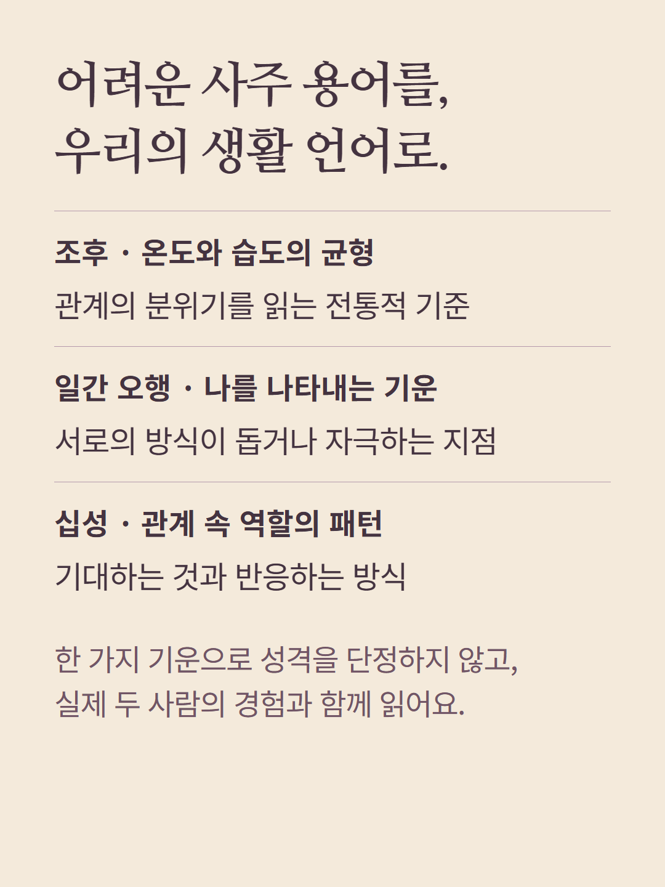
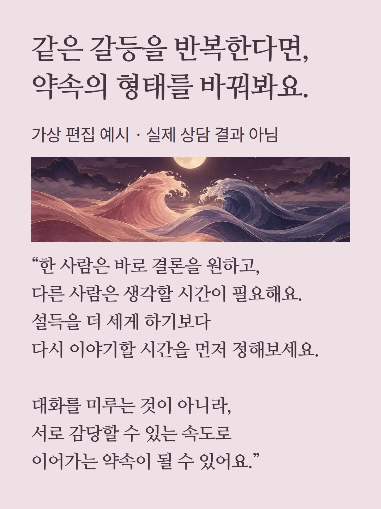
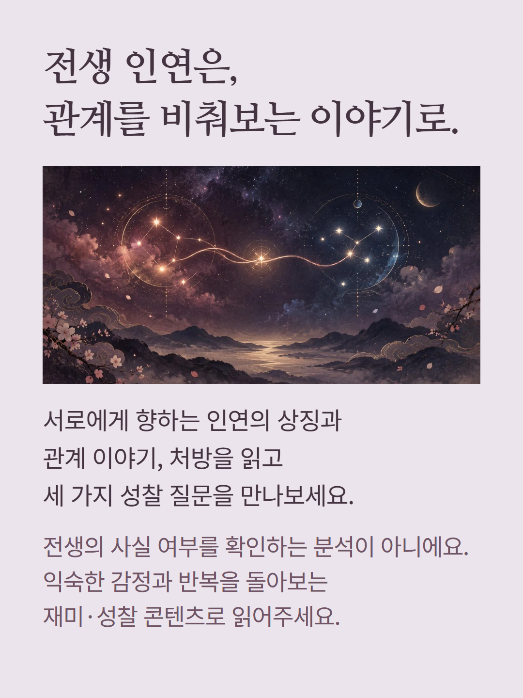
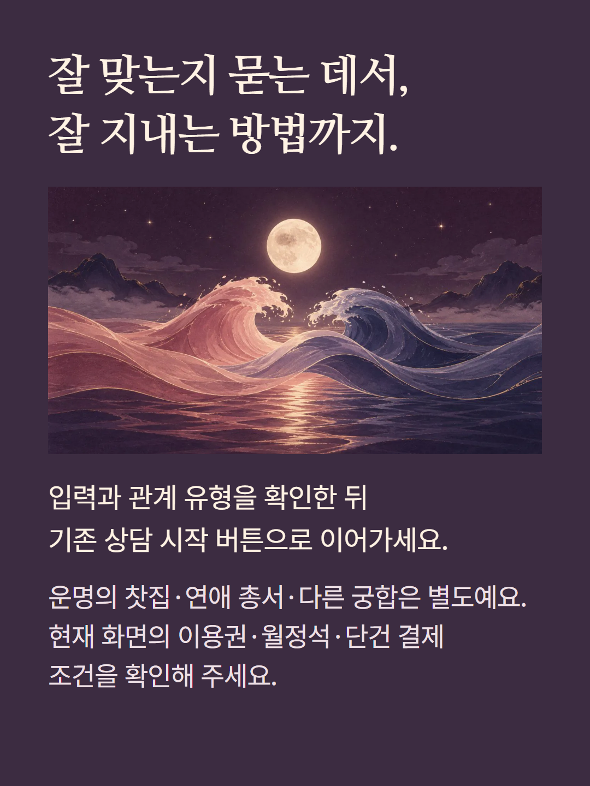

본인 사주와 상대의 이름·생년월일·양력/음력 구분·시각, 선택한 관계 유형을 바탕으로 읽는 사주 궁합입니다. 점수·등급·합충 관계와 그 근거를 바탕으로 AI가 관계의 패턴과 조율 방법을 서술합니다. 총평, 에너지 조화, 감정·갈등·현실·장기 흐름, 궁합 포인트, 현실적인 패턴과 처방, 전생 인연의 상징적 이야기를 담습니다. 연애·결혼 심화는 해당 유형에만 표시되며, 근거 항목은 두 사람의 계산 결과에 따라 달라집니다. 시각이 비어 있으면 정오 기본값으로 계산하므로 정확한 시각을 모를 때는 해석에 한계가 있습니다. 전생 인연은 사실 판정이 아닌 재미와 성찰을 위한 콘텐츠이며 점수는 관계 성공 확률이 아닙니다. 예시는 가상 편집입니다. 운명의 찻집·연애 총서·다른 체계의 궁합은 별도 상품이고, 가격과 결제 조건은 현재 구매 화면을 따릅니다.